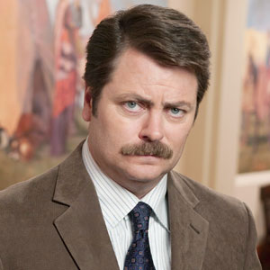
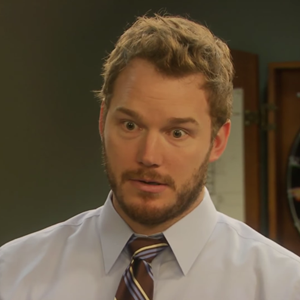

Meet My Team!
Ben WyattCampaign ManagerAfter his disastrous end to his Congressional service, Ben "Ice Congress" Wyatt decided to take a break from public service to work on Leslie Knope's campaign. With several sucesses in the campaign management department, Wyatt is confident that no ice will be involved with this campaign. |
|
Ann PerkinsPoetic, Noble Land-mermaidWithout much experience in the political field, Ann Perkins instead brings to the table friendship. Moving back from Michigan to support the campaign, Leslie's long time best friend is without a doubt a boon to the campaign. |
|
Ron SwansonLife Advisor and WoodworkerAfter refusing to speak with our website about himself. Ron Swanson claims that his involvement in this campaignment is purely out of his debt to his long time work-proximity acquaintance Leslie Knope. He further emphasized that there should be no president and no man or woman should have that much power. |
 |
April LudgateWitchLudgate claims that she only took this position because her last "big heist" was foiled by an unknown undercover FBI agent. Regardless, Ludgate's acuity and charm will prove absolutely necessary to propelling this campaign to the top. |
|
Andy DwyerSecurity DetailAndy Dwyer's FBI career exploded after accidentally involving himself in a high-profile case in Washington D.C. Working undercover as a man named "Burt Macklin," Dwyer was sucessfully able to take down a international spy organization bent on reigniting Hitler's Nazi campaign. After sucessfully taking down the head of the organization, Janet Snakehole, an injury forced him into retirement. He then decided to personally cover the security for Leslie Knope's campaign. |
 |
Tom HaverfordMogul of MogulsAfter Haverford's explosive book career propelled him back into the limelight, a string of fraud allegations and legal troubles tore down Haverford's once wealthy book empire. After his crushing loss, Haverford begrudgingly joined up with Knope's campaign, stating that "there was no where else lower to go." |

|
| |
|||
| ©2015, Donghun Kang, CMU | donghunk | Contact me | |